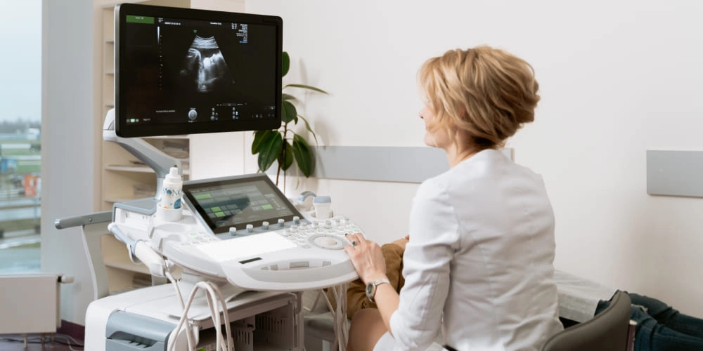

Точность, спасающая жизни
Профессиональное исследование на оборудовании экспертного класса. Специализируемся на сложных травмах, сосудах и ревматологии.

О центре
Мы объединили классическую диагностику с уникальным опытом работы в военно-полевой травматологии.
Вся диагностика проводится на оборудовании экспертного класса, что обеспечивает непревзойденно высокую детализацию тканей и позволяет выявлять патологии на самых ранних стадиях развития.
Опыт
Врачи с многолетней практикой в РЦТОН (Травматология), справляющиеся со сложнейшими случаями.
Точность
Оборудование экспертного класса для визуализации мельчайших повреждений и скрытых патологий.
Подход
Не просто описание снимка, а глубокий клинический анализ и понимание первопричины вашей проблемы.
Наши ключевые компетенции
Узкая специализация позволяет нам видеть то, что пропускают другие.
Боевая травма
Диагностика осколочных ранений, поиск инородных тел, оценка повреждений нервов и сосудов при минно-взрывных травмах.
Ревматология
Раннее выявление артритов, оценка состояния хряща и синовиальных изменений. Визуализация, превосходящая рентген.
Сосудистая система
Дуплексное и триплексное сканирование артерий и вен. Выявление тромбозов и стенозов на ранних стадиях с высочайшей точностью.
Симптомы: когда нужно на УЗИ?
Не игнорируйте тревожные сигналы организма. Своевременная диагностика — залог успешного лечения.
Боли и дискомфорт
Острые, тянущие или хронические боли в суставах, спине, животе или шее неизвестной этиологии. Ограничение подвижности суставов.
Травмы и отеки
Отеки конечностей, подозрение на наличие инородных тел (осколков), последствия ушибов, растяжений и минно-взрывных травм.
Сосудистые нарушения
Тяжесть в ногах, выраженные вены, онемение конечностей, частые головные боли, головокружения или шум в ушах.
Услуги и стоимость
Все исследования проводятся на высокоточном оборудовании.
Внутренние органы
Своевременное УЗИ внутренних органов критически важно для профилактики и раннего обнаружения структурных изменений и заболеваний печени, желчного пузыря и почек.
- Комплексное УЗИ брюшной полости 2500 ₽
- УЗИ почек и надпочечников 2000 ₽
- УЗИ мочевого пузыря 1500 ₽
Сосуды (Дуплекс)
Оценка состояния кровотока помогает предотвратить инфаркты, инсульты и тромбозы, спасая жизнь при скрытых патологиях сосудистого русла.
- Артерии и вены нижних конечностей 3500 ₽
- Сосуды головы и шеи (БЦА) 2500 ₽
- Брюшная аорта 2000 ₽
Травматология и суставы
Точная визуализация повреждений хрящей, связок и периферических нервов для правильной оценки ущерба и успешной реабилитации после травм.
- УЗИ мягких тканей (одна зона) 2500 ₽
- УЗИ сустава (коленный, плечевой и др.) 2500 ₽
- УЗИ периферических нервов 2500 ₽
Наши врачи
Команда экспертов, которым доверяют здоровье и жизнь.
Стефаненко Оксана Васильевна
Экс-главный республиканский специалист МЗ ДНР по УЗД. Эксперт с колоссальным опытом диагностики.
Стефаненко Артем Вадимович
Опыт работы в Травматологическом центре. Специалист по визуализации сложных травм конечностей и мягких тканей.
Частые вопросы (FAQ)
Важная информация для наших пациентов перед посещением клиники.
Как долго готовится заключение УЗИ?
Медицинское заключение с подробным описанием и снимками выдается на руки в течение 10-15 минут сразу после завершения исследования. Наш протокол составлен профессионально и детально, благодаря чему вы сможете оперативно передать эту информацию вашему лечащему врачу для постановки точного диагноза.
Нужна ли специальная подготовка к процедуре?
Подготовка строго зависит от типа исследования. УЗИ брюшной полости проводится натощак (воздержитесь от приема пищи за 6-8 часов до визита). УЗИ мочевого пузыря требует его наполненности — за час до приема необходимо выпить около 1 литра негазированной воды. Исследования сосудов, суставов и мягких тканей никакой предварительной подготовки не требуют.
Документы и гарантии
Мы работаем только официально, имеем все необходимые лицензии и сертификаты.
Лицензия МЗ ДНР
Государственная регистрация
Высшая категория
Квалификационные сертификаты
Сертификаты УЗИ
Оборудование экспертного класса
Контакты и запись
Готовы ответить на ваши вопросы и записать на удобное время.
Сб: 08:00 — 13:00